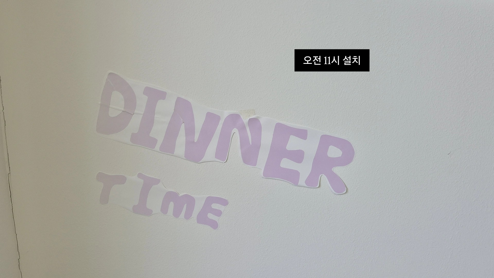

SUN CLOCK PROJECT
DINNER TIME
본 프로젝트는 산업디자인학과 디자인 스튜디오 1 기말 프로젝트의 일환으로 기획되었습니다.
컨셉의 핵심은 공간의 고유한 맥락과 사용자 간의 상호작용을 관찰하고, 이를 통해 사용자들이 무의식적으로 수용하던 환경적 요소를 의식적으로 자각하게 만드는 데 있습니다.
공부라는 명확한 목적으로 설계된 '교양분관'은 사용자들이 장시간 앉아 학업에 전념하는 특유의 행동 프로토콜을 가집니다. 그 안에서 사용자들은 시간의 흐름을 잘 체감하지 못합니다.
'SUN_CLOCK PROJECT'는 이처럼 무의식적으로 흘러가는 '시간'과 인지하지 못했던 '햇빛'의 관계성을 시각화해 사용자들에게 햇빛에 대한 의식을 심어고자 합니다.


처음 시도는 날씨의 이유로 N25(산업디자인동)에서 오전에 진행되었습니다.
- 아침시간에 학생들이 강의실로 이동하기 위해 자주 이동하는 계단
- 아침시간에 빛이 들어오는 공간
으로써 좋은 조건을 가지고 있었기 때문에 N25 1층에 있는 엘레베이터 옆 계단을 장소로 지정하였습니다. 시트지를 이용해 시간에 따른 햇빛이 비추는 각도를 표현하고 해당 시트지에 시간에 따른 학생들의 상황에 알맞은 말들을 써넣었습니다.
해당 활동을 진행하였을 때 눈에 잘 보이지 않고 멘트를 적을 수 있는 공간이 한정적이며 간결하게 표현하기 힘들다는 피드백을 스스로 얻었습니다.
6/10 프로젝트 진행
6/10 실제로 교양분관(N10) 2층 A번 룸에서 프로젝트를 진행하였다.
저번 시도의 피드백을 참고하여 자외선에 직접적으로 닿으면 무색에서 빨간색으로 변하는 '시광종이'를 이용해 'DINNER TIME!'이라는 멘트를 써 붙였다. 또한 햇빛이 지나는 길을 표현해야 했기 때문에 흰색 벽과 대조되는 검은색 시트지로 해당 시간 동안의 햇빛이 들어오는 범위를 표현하였다. 이때 검은 라인의 기준을 햇빛이 들어오는 시점의 가장 낮은 곳에서부터 햇빛이 더 이상 들어오지 않을 때의 가장 높은 시점으로 삼았다.
또한 사람들의 반응을 직접 눈으로 확인하기는 어려운 부분이 있어 설문을 이용하고자 했다. 햇빛이 검은 라인 범위 내에 들어올 때에는 설문 참여가 가능하도록 하고, 들어오지 않는 모든 시간에는 참여가 불가능하다는 문구를 볼 수 있도록 QR 코드를 관리했다.
